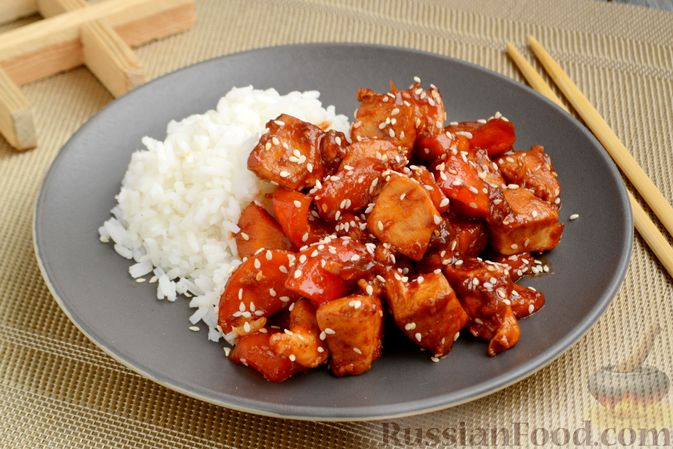

Мясо по-французски с запеченным картофелем:
Продукты (на 8 порций):
- Свинина (карбонад, шея) - 1 кг
- Картофель среднего размера - 7 шт.
- Помидоры - 3 шт.
- Лук репчатый среднего размера - 2 шт.
- Сыр твердый - 200 г
- Соль
- Черный молотый перец
- Приправа к мясу
- Масло растительное
- Майонез

Картофельная запеканка со свининой, помидорами и луком:
Продукты (на 4 порций):
- Свинина (окорок) - 400 г
- Картофель - 450-500 г
- Лук репчатый - 130 г
- Помидоры черри - 100 г
- Сыр сулугуни - 100 г
- Сметана (или майонез) - 100 г
- Масло растительное - 1 ст. ложка
- Соль - 0,5 ч. ложки (или по вкусу)
- Перец чёрный молотый - 1/5 ч. ложки (или по вкусу)
- Паприка молотая - 0,5-1 ч. ложка (или по вкусу)
- Зелень свежая (для подачи) - 1 веточка
